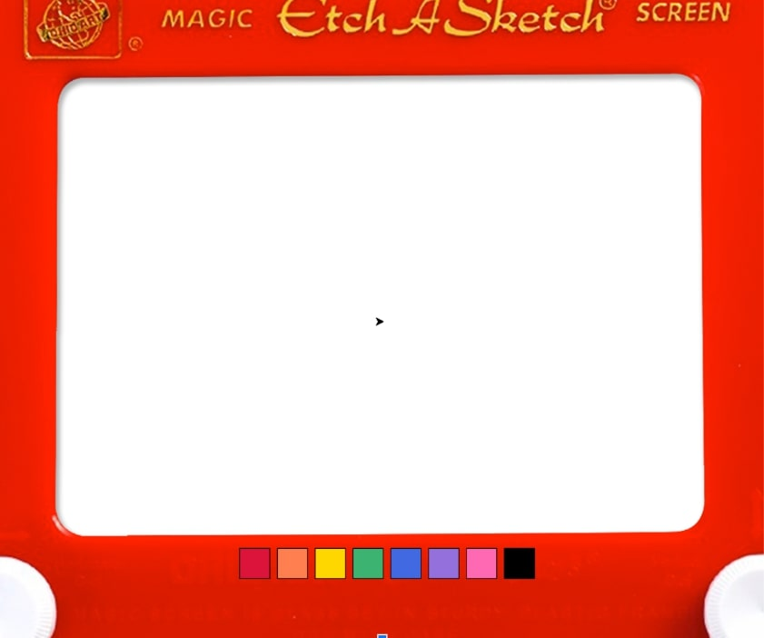

Home
Portfolio
About Me
This is my Portfolio Page!
PLTW 1.1.9 Project.
We made an Etch-A-Sketch! You can use the computer arrows to move around the turtle and draw different images. You can use the colored boxes at the bottom to change the color of the turtle by clicking on the color you want to use.

PLTW 1.2.5 Project
We made a Soccer Game! The player can use the arrows to get to the ball and kick it into the black net. The ball will then move to a randomized place to be kicked again. The player has 30 seconds to see how many points they can get with the score being kept at the top.

Scratch Project.
We created a game called Cupcake Surfers. This is a spin on Subway Surfers. The player can use the arrows to avoid the trains and obstacles and collect the cupcakes.
2.1.6 A pHishy Fish Tank

The fish tank had security issues that we investiagted and had to fix in order to get the fish tank running properly, without a breach of the system.
Rover Phone Home
In the project, we had to discver where our rover was. According to our analysis of the data, we though the rover was in the desert plain.
Projet 3.2.4 Making Meaning from Data.

In the project, we looked at the production of honey in the country in order to figure out the health of the bee colonies.